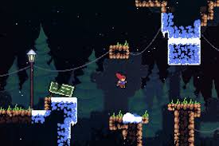

Celeste
Publishing Info
- Published by: Matt Makes Games Inc.
- Developed by: Matt Makes Games Inc.
- Released: Jan 25, 2018
Description
Celeste is a 2D platformer revolving around the character Madeline, who goes to climb the mysterious Mt.Celeste. Each level in the game is a section of this mountain, with unique themes and challenges presented in each area, with additional bonus challenges that can be discovered for the more daring players.
Game Categories
- Genre: Action
- Perspective: Side view
- Visual: Fixed
- Gameplay: Arcade
Review Quote
"Celeste is an exemplary amalgamation of style, mechanics and character. A devilishly brilliant action platformer with enough skill required to excite genre purists and the speed running community, while at the same time featuring a breakdown of gameplay elements to customize and cater for all audiences." -- https://www.nintendolife.com/reviews/switch-eshop/celeste